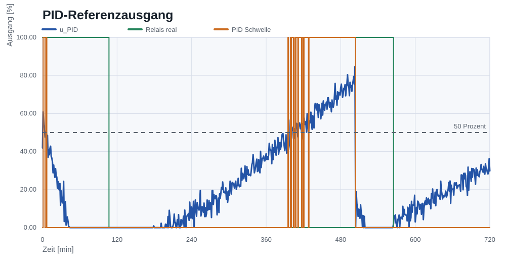
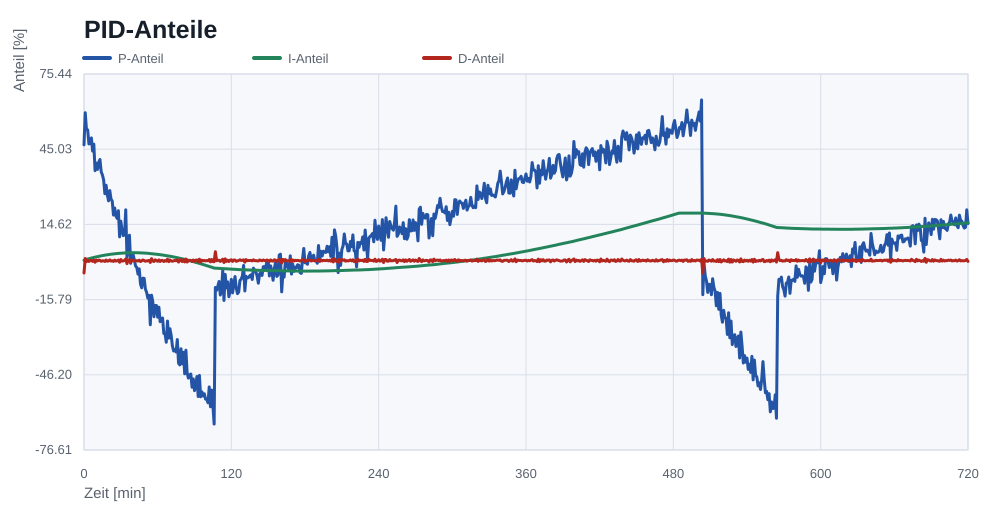

Laden ein
Unterer Hysteresepunkt fuer die Freigabe des TP4056.
Raspberry Pi Pico · MicroPython · Regelungstechnik
Ein uebergeordneter Lade-Waechter fuer eine geschuetzte 18650-Zelle: Der TP4056 laedt sicher per CC/CV, der Pico misst, entscheidet, schaltet die 5-V-Freigabe und dokumentiert den Verlauf mit sauberer Regelungsanalyse.
Motivation
Li-Ion-Zellen verlangen eine kontrollierte CC/CV-Ladekurve. 18650 Ladelogik baut deshalb bewusst keinen Software-Lader, sondern eine sichere Aufgabenverteilung: Das fertige TP4056-Modul laedt, der Pico ueberwacht die Umgebung und dokumentiert das Verhalten.
Die Regelungstechnik wird trotzdem sichtbar: Hysterese, Grenzwerte, Fehlerlatch und ein angewandter PID-Referenzregler werden aus den Messdaten berechnet und in Plots ausgewertet.
Regelungstechnik
Die reale Stellgroesse ist binaer: TP4056-Eingang freigeben oder trennen. Deshalb ist die Hardwarelogik ein robuster Zweipunktregler mit Sicherheitsueberwachung.
Unterer Hysteresepunkt fuer die Freigabe des TP4056.
Oberer Schaltpunkt, bewusst unterhalb der typischen Ladeschlussspannung.
Temperaturfehler wird gelatcht, das Relais bleibt abgeschaltet.
u[k] = 1, wenn y[k] <= 3,85 V
u[k] = 0, wenn y[k] >= 4,00 V
u[k] = u[k-1], sonst
y[k] ist die gemessene Zellspannung, u[k] der Relaiszustand.
Die Zone zwischen 3,85 V und 4,00 V ist die Hysterese. Sie
verhindert schnelles Klappern des Relais, wenn Messrauschen oder
Lastspruenge nahe am Schaltpunkt liegen.
PID-Regelung angewandt
Ein PID-Regler wird auf die Simulationsdaten angewandt, um die Regelabweichung fachlich zu bewerten. Sein Ausgang ist ein theoretischer Freigabegrad von 0 % bis 100 %. Er steuert nicht die Zelle und ersetzt nicht den TP4056.
w_ref = (U_ein + U_aus) / 2
w_ref = (3,85 V + 4,00 V) / 2 = 3,925 V
e[k] = w_ref - y[k]
S[k] = clamp(S[k-1] + e[k] · T_s, S_min, S_max)
P[k] = Kp · e[k]
I[k] = Ki · S[k]
D[k] = Kd · (e[k] - e[k-1]) / T_s
u_pid[k] = clamp(u0 + P[k] + I[k] + D[k], 0 %, 100 %)
S[k] ist der Integralzustand in V min; P[k],
I[k] und D[k] sind Ausgangsanteile in Prozent.
In echter Hardware waere der PID-Ausgang nur sinnvoll, wenn es einen
sicheren proportionalen Aktor gaebe. Hier existiert nur ein Relais,
also bleibt die reale Entscheidung Hysterese plus Grenzwertlogik.
Hardware
Fuehrt die Messschleife aus, entscheidet per Hysterese und schreibt CSV-Logs.
Uebernimmt den eigentlichen Li-Ion-Ladevorgang mit CC/CV-Verhalten.
Liefert Zellspannung und Ladestrom per I2C fuer Logging und Regelentscheidung.
Ueberwacht die Zelltemperatur direkt am Akkugehaeuse.
Schaltplan
Der wichtigste Sicherheitsaspekt ist die Position des Relais: Es trennt die Versorgung des Lademoduls, nicht den Batteriezweig.

MicroPython-Code
Die Firmware misst Spannung, Strom und Temperatur, berechnet den Relaiszustand und schreibt jede Probe in eine CSV-Datei.
if relay_on and voltage_v >= CHARGE_OFF_V:
relay_on = False
elif not relay_on and voltage_v <= CHARGE_ON_V:
relay_on = True
if temperature_c >= TEMP_CUTOFF_C:
relay_on = False
fault_latched = TrueMessdaten und Plots
Die Daten bilden einen plausiblen TP4056-Ladeverlauf mit Tapering, Temperaturtraegheit, Relais-Hysterese und PID-Referenzausgang ab.





Sicherheit
Fazit
18650 Ladelogik zeigt einen vollstaendigen Weg von Embedded-Firmware ueber Hardware-Dokumentation bis zur Datenauswertung. Die reale Entscheidung per Hysterese passt zur binaeren Stellgroesse.
Die PID-Auswertung macht die klassische Regelungstechnik sichtbar, ohne die sichere Grenze zu verwischen: Der Pico beaufsichtigt, der TP4056 laedt.